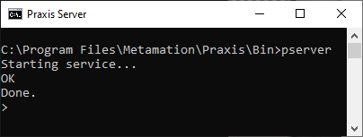

Change license
Si una licencia necesita ser actualizada o extendida, entonces esto se puede realizar siguiendo los pasos a continuación:
Cierre el software y los servicios en el servidor (Pserver y Pmonitor).
Inicie un símbolo del sistema DOS en modo admin.
Navegue a C:\Program Files\Metamation\Praxis\Bin escribiendo
cd\ y presione Enter.
Escriba PSERVER y presione Enter

Escriba LIC y presione Enter y verá aparecer el siguiente diálogo.

Al hacer clic en Acciones usted tiene las siguientes opciones:
-
Renew que intentará renovar la licencia.
-
Release que dará de baja la licencia y la hará disponible para registro en una nueva computadora.
-
_Cerrar que cerrará el cuadro de diálogo actual.
Al hacer clic en _Vista usted puede seleccionar Details y se mostrará la información sobre su licencia actual.
| Para que un cambio de licencia Renewed tome efecto, usted debe reiniciar las aplicaciones / servicios de Pserver después de renovar. |